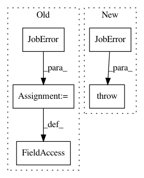

1a08f1da70bd6d4c33585f67af542dec4d850161,reframe/core/schedulers/torque.py,TorqueJobScheduler,poll_jobs,#TorqueJobScheduler#Any#,45
Before Change
if completed.returncode != 0:
for job in jobs:
job.exception = JobError(f"qstat failed: {completed.stderr}",
jobid=job.jobid)
return
jobs_stdout = {}
After Change
return
if completed.returncode != 0:
raise JobError(f"qstat failed: {completed.stderr}")
jobs_info = {}
for job_raw_info in completed.stdout.split("\n\n"):
jobid_match = re.search(
In pattern: SUPERPATTERN
Frequency: 3
Non-data size: 5
Instances
Project Name: eth-cscs/reframe
Commit Name: 1a08f1da70bd6d4c33585f67af542dec4d850161
Time: 2020-07-20
Author: eirini.koutsaniti@cscs.ch
File Name: reframe/core/schedulers/torque.py
Class Name: TorqueJobScheduler
Method Name: poll_jobs
Project Name: eth-cscs/reframe
Commit Name: a3b103f606a54940520ad7f6dd7a41f465e2a591
Time: 2020-10-04
Author: karakasis@cscs.ch
File Name: reframe/core/schedulers/slurm.py
Class Name: SlurmJobScheduler
Method Name: _cancel_if_pending_too_long
Project Name: eth-cscs/reframe
Commit Name: a3b103f606a54940520ad7f6dd7a41f465e2a591
Time: 2020-10-04
Author: karakasis@cscs.ch
File Name: reframe/core/schedulers/torque.py
Class Name: TorqueJobScheduler
Method Name: poll